Learning Goals
At the end of this Tutorial, you will be able to:
- Download a CSS file from the Internet.
- Link CSS stylesheet files to HTML web pages.
- Update the style rules in a CSS file and view the effect on a linked web page.
You can view finished versions of the four sample web pages you style with four sample CSS files in this Tutorial by clicking the links below. The finished samples will each open in a new tab of your web browser.


The common CSS properties
In the previous Introduction to CSS tutorial you were introduced the CSS properties most commonly used by web designers to format the content of web pages.

In this Tutorial, you will apply these CSS properties to the five web pages you created in the Working with HTML Tutorial.
Creating your assets and css sub-folders
Web designers use the word assets to desribe those files which are used by web pages, but which are not themselves HTML files. Assets typically include stylesheets (CSS files), images (JPG or PNG files), audio tracks (MP3 files), videos (MP4 files), Adobe Acrobat documents (PDF files) and JavaScript code (JS files).
In a well-organised website structure, asset files are stored in various sub-folders of a main assets sub-folder.
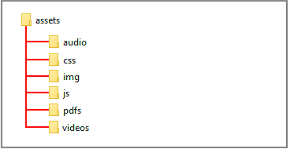Before downloading the sample stylesheet files for this Tutorial, you need to create a sub-folder structure to store them.
For Microsoft Windows 10 users, here are the steps:
- Open File Explorer, display your ‘main’ 📁 websites folder and then your 📁 execises sub-folder inside it.
- In the blank space at the right side, right-click and choose New | New folder from the context menu.

- Give your new folder the name assets.


DO NOT type upper-case letters. Type assets.
DO NOT type 'Assets' or 'ASSETS'.
- Next, click your new 📁 assets sub-folder folder to select it.
- Right-click anywhere in the empty sub-folder and choose New | New folder from the context menu.
Give your new sub-folder the name css.
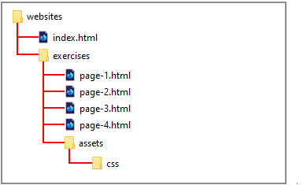
DO NOT type upper-case letters. Type css.
DO NOT type 'Css' or 'CSS'.
✅ That’s it. You have now created a sub-folder structure to store the stylesheet files you will download.
Downloading your four sample CSS files
Now you will download four stylesheet files, one for each of your four sample HTML pages. Here are the steps.
- In Google Chrome or Mozilla Firefox Developer Edition, click the following link: style-1.css This first stylesheet file will open in a new tab of your web browser.
- Right-click anywhere in the browser window, and from the context menu, choose Save as... (Chrome) or Save Page As... (Firefox).

- Save the style-1.css stylesheet file in your 📁 websites/exercises/assets/css sub-folder. 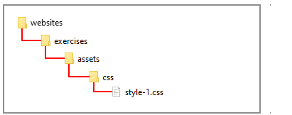
- Repeat the above steps for the following three other stylesheet files. style-2.css style-3.css style-4.css
- Check that your 📁 websites sub-folder structure now looks as shown below. 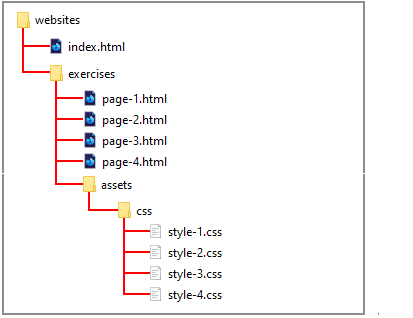
In the remainder of this Tutorial you will work with these four CSS files along with the four corresponding HTML web page files.
Styling your first sample web page
You will use the style-1.css stylesheet file to style the sample page-1.html web page.
- In Visual Studio Code, open the page-1.html file.
- Before you can apply styles from a stylesheet to a web page, you first need to link the stylesheet flle to that page.
VS Code provides the following shortcut to help you do this.
In the head section of the page-1.html file, at the end of the description details, click with the mouse and press the Enter key to open a new, blank line.
 Click at the beginning of this new line, press the lower-case letter l key to display a pop-up menu with the link:css option already selected.
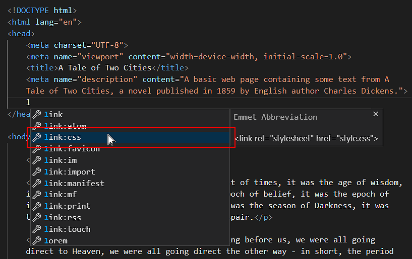
Click at the beginning of this new line, press the lower-case letter l key to display a pop-up menu with the link:css option already selected.
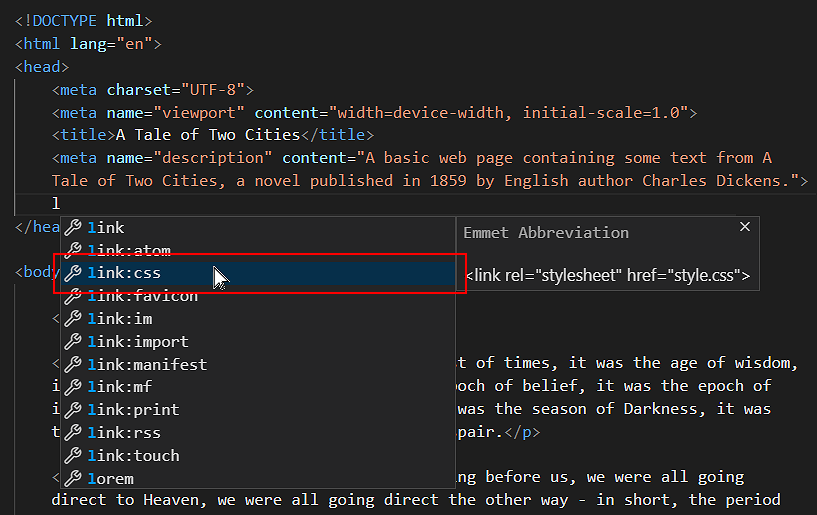 - Click this link:css option with the mouse, or press either the Enter key to select it. VS Code adds the stylesheet link code to your web page. 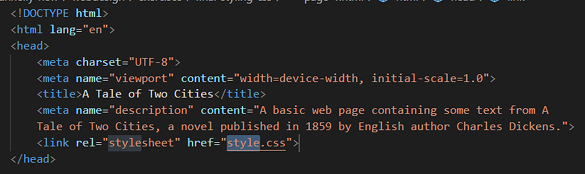
- As you can see, VS Code gives the default name of style.css to the linked stylesheet file.
Edit the folder location and file name to:
assets/css/style-1.css
The head section of your web page should now look as shown below. 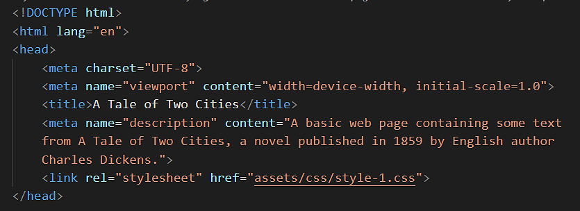
DO NOT type the name of stylesheet file with an upper-case ‘S’ as in Style-1.css.
DO NOT use some other mixture of upper and lower-case letters, such as STYLE-1.CSS or style-1.CSS or whatever.
DO NOT enter any blank spaces in the name of your file such as style- 1.css or style -1.css.
- Save your page-1.html file.
Your page-1.html web page is now linked to your style-1.css stylesheet file.
In your web browser, display the page-1.html web page.
It should look like the web page at the following link:
page-1.html (before CSS style updates)
You can close your page-1.html web page in VS Code.
Format of the HTML link code
Note that the link from a web page to a stylesheet has two parts: a ref part and a href part.
- Sometimes you will see the rel part written first, and then the href part.
- Other times, you will see the href part placed before the rel part.
Either is allowed.
So, this is correct HTML code:
<link rel="stylesheet" href="assets/css/dark-theme-style.css">
And so too is this.
<link href="assets/css/dark-theme-style.css" rel="stylesheet">
Updating the CSS style rules: sample page one
Let’s update the linked style-1.css stylesheet file and see the effect on your web page.
- In VS Code, open the style-1.css file.
- For the h1 selector, inside the curly braces, copy-and-paste these extra new style rules:
text-align: center; font-weight: normal; letter-spacing: -2px; margin-bottom: 32px;
Your h1 selector and its five style rules should now look as shown below. 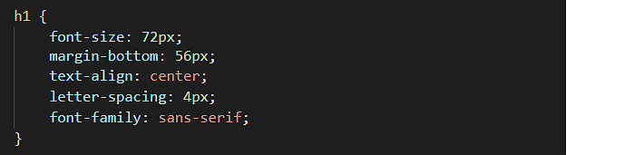 - For the p selector, inside the curly braces, copy-and-paste these extra new style rules:
font-family: sans-serif; line-height: 1.6; margin-bottom: 20px;
Your p selector and its four style rules should now look as shown below. 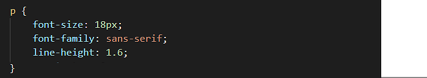 - Save your style-1.css stylesheet file.
Display your page-1.html web page in your web browser.
It should now look like the web page at the following link:
page-1.html (after CSS style updates)
You can now close your style-1.css file in VS Code.
Styling your second sample web page
Next, you will apply the style-2.css stylesheet file to the sample page-2.html web page.
- In VS Code, open the page-2.html file.
- In the <head> of your web page, just before the closing </head> tag, press the Enter key to open a new, blank line, and then copy-and-paste the following stylesheet link to this new line.
<link rel="stylesheet" href="assets/css/style-2.css">
The <head> section of your web page should now look as shown below.
- Save your page-2.html file.
Your page-2.html web page is now linked to your style-2.css stylesheet file.
In your web browser, display the page-2.html web page.
It should look like the web page at the following link:
page-2.html (before CSS style updates)
You can close your page-2.html web page in VS Code.
Updating the CSS style rules: sample page two
Let’s update the linked style-2.css stylesheet file and see the effect on your web page.
- In VS Code, open the style-2.css file.
- For the h1 selector, inside the curly braces, copy-and-paste these extra new style rules:
text-align: center; letter-spacing: 4px; font-family: sans-serif;
Your h1 selector and its five style rules should now look as shown below. 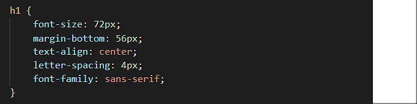 - For the h2 selector, inside the curly braces, copy-and-paste these extra new style rules:
font-family: sans-serif; text-align: center; line-height: 1.4; text-transform: uppercase; font-weight: normal;
Your h2 selector and its seven style rules should now look as shown below.
- For the p selector, inside the curly braces, copy-and-paste these extra new style rules:
line-height: 1.6; margin-bottom: 20px;
Your p selector and its three style rules should now look as shown below. 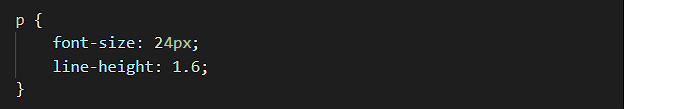 - Save your style-2.css stylesheet file.
Display your page-2.html web page in your web browser.
It should now look like the web page at the following link:
page-2.html (after CSS style updates)
You can close your style-2.css file in VS Code.
Styling your third sample web page
Next, you will apply the style-3.css stylesheet file to the sample page-3.html web page.
- In VS Code, open the page-3.html file.
- In the <head> of your web page, just before the closing </head> tag, press the Enter key to open a new, blank line, and then copy-and-paste the following stylesheet link to this new line.
<link rel="stylesheet" href="assets/css/style-3.css">
The <head> of your web page should now look as shown below. 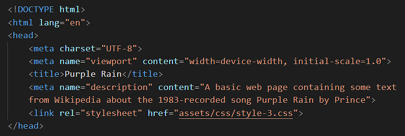 - Save your page-3.html file.
Your page-3.html web page is now linked to your style-3.css stylesheet file.
In your web browser, display the page-3.html web page.
It should look like the web page at the following link:
page-3.html (before CSS style updates)
You can close your page-3.html web page in VS Code.
Updating the CSS style rules: sample page three
Let’s update the linked style-3.css stylesheet file and see the effect on your web page.
- In VS Code, open the style-3.css file.
- For the h1 selector, inside the curly braces, copy-and-paste these extra new style rules:
text-align: center; font-weight: normal; letter-spacing: 4px;
Your h1 selector and its five style rules should now look as shown below.
- For the h2 selector, inside the curly braces, copy-and-paste this extra new style rule:
text-transform: uppercase;
Your h2 selector and its four style rules should now look as shown below.
- For the p selector, inside the curly braces, copy-and-paste these extra new style rules:
font-family: sans-serif; line-height: 1.6; margin-bottom: 20px;
Your p selector and its four style rules should now look as shown below. 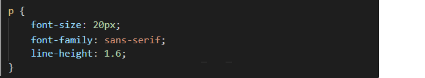 - Save your style-3.css stylesheet file.
Display your page-3.html web page in your web browser.
It should now look like the web page at the following link:
page-3.html (after CSS style updates)
You can close your style-3.css file in VS Code.
Styling your fourth sample web page
Next, you will apply the style-4.css stylesheet file to the sample page-4.html web page.
- In VS Code, open the page-4.html file.
- In the <head> of your web page, just before the closing </head> tag, press the Enter key to open a new, blank line, and then copy-and-paste the following stylesheet link to this new line.
<link rel="stylesheet" href="assets/css/style-4.css">
The <head> of your web page should now look as shown below. 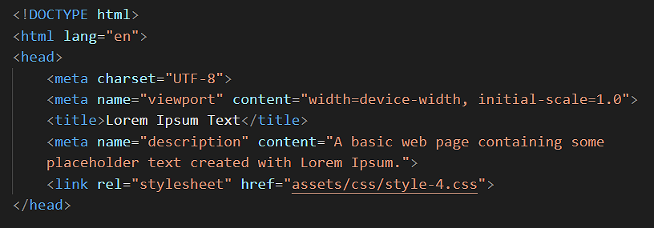 - Save your page-4.html file.
Your page-4.html web page is now linked to your style-4.css stylesheet file.
In your web browser, display the page-4.html web page.
It should look like the web page at the following link:
page-4.html (before CSS style updates)
You can close your page-4.html web page in VS Code.
Updating the CSS style rules: sample page four
Let’s update the linked style-4.css stylesheet file and see the effect on your web page.
- In VS Code, open the style-4.css file.
- For this web page, the task is to display all the headings, sub-headings and paragraphs of text with a font-family of sans-serif.
You could add the following style rule to each one of the CSS selectors:
font-family: sans-serif;
But because all the styles on the web page are to have the same font-family value, a quicker option is to add just one new rule to the body selector at top of the stylesheet file.body { font-family: sans-serif; }
- Save your style-4.css stylesheet file.
Display your page-4.html web page in your web browser.
It should now look like the web page at the following link:
page-4.html (after CSS style updates)
You can now close your style-4.css file in VS Code.
About ‘white space’ in web page layout
The term white space comes from the world of print design where content – text and images – are printed (mostly) on white-coloured paper. White space means space in a design layout that is empty. Although it contains nothing, white space is just as important as any of the content it surrounds for this reason: it makes text more inviting to read.
Here are some examples of white space in use in print design.

As in print, so too in web design.

Because electronic screens – and modern printing processes – can create almost any background colour, the original term of white space is increasingly known by the alternative term of negative space.
Setting the page content width
Below are four typical examples of modern web pages that have all their content – both text and images – laid out in a single column.

As you can see, all have lots of white space at the left and right edges of the content.
By default, web browsers add a small amount of white space at the left and right edges of the web browser window. You can see this in the sample web pages you have created and styled. One example is shown below.

Let’s add some wider, more user-friendly white spacing to your sample web pages.
- In VS Code, open all four of the sample stylesheet files:
global.css
style-1.css
style-2.css
style-3.css
style-4.css - At the top of each stylesheet, just under the resets section, copy-and-paste the following:
/* Desktops */ @media (min-width: 768px) { body { padding: 4% 20% } } /* Mobiles */ @media (max-width: 767px) { body { padding: 12% 8% } }
- Save your five CSS files.
Display your five web pages, one after the other, in your web browser.
They should look similar to the web pages at the following links:
page-1.html (after spacing added)
page-2.html (after spacing added)
page-3.html (after spacing added)
page-4.html (after spacing added)
For desktop/laptop screens, you can see that:
- 20% of white spacing has been added to the left and right of the web page content.
- The width of the single column of content is now 60% of the total screen width.
- A spacing of 4% has been added to the top and bottom edges of the web page content.
Line length guidelines
Line length is an important factor in web design for both readability and visual appeal. A line length that is too short causes the reader’s eye to jump too frequently from one line to the next.
If the line length is too long, however, the reader can too easily ‘lose their place’ in mid-paragraph, forcing them to repeatedly double-back.
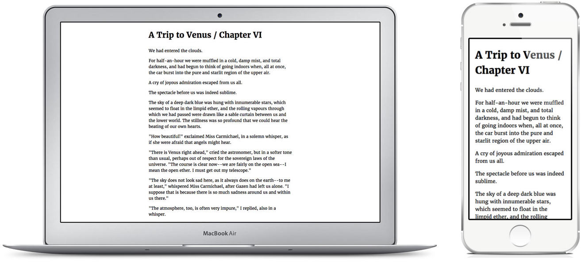Here are the general guidelines:
- Desktop/laptop screens: The ideal line length for text is considered to be 45-75 characters per line, including spaces and punctuation.
- Mobile screens The ideal line length is about 66 characters.
Line length also affects Line-height. The general rule is:
- The longer the line length, the taller the line-height should be. A CSS lne-height value of 1.6 or 1.7 is a good choice for paragraphs of text.
- The shorter the line length, the tighter should be the line-height. For text headings, a CSS line-height value in the range 1.2 to 1.4 is a widely used.
Uploading your files to GitHub
After completing your web pages and stylesheets, your next step is to upload them to your account on GitHub.
- Open a new tab in your web browser and go to GitHub.com. If you are not already signed in to your GitHub account, sign in now.

- On your GitHub home page, click the name of the repository (‘repo’) that holds your web pages. Its name will look as follows, where username is your chosen username on GitHub.
username.github.io

- On the next GitHub screen displayed, near the right of the screen, you can see a button named Add file. Click on it.

- From the dropdown list displayed, choose the option Upload files.

- In File Explorer (Windows 10) or Finder (Apple Mac), select or drag-and-drop your 📄 index.html file and your 📁 exercises sub-folder to upload them to your repository on GitHub.

- Scroll down to the bottom of the GitHub screen, and accept or edit the short message (Add files via upload) in the Commit changes box.
- Finally, click the green Commit changes button to upload your entire exercises sub-folder and all the files it contains.

Your web pages are now published on GitHub at web addresses similar to the following, where username is the username you have chosen for your GitHub account:
https://username.github.io/index.html
https://username.github.io/exercises/page-1.html
https://username.github.io/exercises/page-2.html
https://username.github.io/exercises/page-3.html
https://username.github.io/exercises/page-4.html
It may take a few minutes for your uploaded files to appear on GitHub.
Further resources
Size Matters: Balancing Line Length And Font Size In Responsive Web Design
By Laura Franz at the Smashing Magazine.
Best UX practices for line spacing
By Tom Clarke at the Just in Mind blog.
Whitespace in Web Design: What It Is and Why You Should Use It
From Gisele Muller on Treehouse.
A Guide to Effective Use of White Space in Web Design
From Joanne Amos on Flywheel.
White Space Design: 20 Striking Examples and Best Practices
From Josesp Downes on Just in Mind.
What Is Whitespace? 9 Websites to Inspire Your Web Design
From Karla Cook on HubSpot Marketing Blog.
White-Space at Work: Why Less is More in Your Website Design
From Sherice Jacob on Crazyegg Blog.
White Space - A Perfect Option For Improving Usability In Web Designs
From Isabella Morris on Usability Geek.